컴퓨터활용능력-1급 (2010-10-17 기출문제)
1과목: 컴퓨터 일반
1. 다음 중 한글 Windows XP에서 사용할 수 있는 USB 포트에 관한 설명으로 옳지 않은 것은?
- USB를 사용하면 컴퓨터를 종료하거나 다시 시작하지 않아도 장치를 연결하거나 연결을 끊을 수 있다.
- 플러그 앤 플레이 설치를 지원하는 외부 버스이다.
- 한번에 8비트씩 전송하며 매우 빠른 전송 속도를 가진 병렬 포트이다.
- 주변장치를 최대 127개까지 연결할 수 있다.
(정답률: 70%)

2. 다음 중 개인용 컴퓨터에서 설정하는 하드 디스크의 파티션에 관한 설명으로 옳지 않은 것은?
- 하나의 하드 디스크를 여러 개의 물리적인 폴더 영역으로 나누는 작업이다.
- 파티션 설정 후에 포맷을 해야 사용할 수 있다.
- 각 파티션 영역마다 다른 운영체제를 설치할 수 있다.
- 한글 Windows XP에서는 [컴퓨터 관리] 창에서 파티션 작업을 수행할 수 있다.
(정답률: 34%)
3. 다음 중 한글 Windows XP에서 로컬 영역 연결을 위한 네트워크 구성 요소의 설명으로 옳지 않은 것은?
- 클라이언트는 사용자가 연결하는 네트워크에 있는 컴퓨터 및 파일 엑세스를 제공한다.
- 서비스는 파일 및 프린터 공유와 같은 기능을 제공한다.
- 프로토콜은 사용자의 컴퓨터가 다른 컴퓨터와 통신할 때 사용하는 규약이다.
- 어댑터는 통신하는 컴퓨터 사이에 데이터 변환을 하는 소프트웨어이다.
(정답률: 52%)
4. 다음 중 인터넷 연결을 위하여 TCP/IP 프로토콜을 설정할 때 서브넷 마스크(Subnet Mask)의 역할에 관한 설명으로 옳은 것은?
- 도메인 명을 IP주소로 변환해 주는 서버를 지정한다.
- 네트워크 ID 부분과 호스트 ID 부분을 구별해 준다.
- 호스트와 연결 방식을 식별한다.
- 연결된 사용자들의 IP를 식별한다.
(정답률: 58%)
5. 다음 중 한글 Windows XP에서 프린터 공유에 관한 설명으로 옳은 것은?
- 기본 프린터로 설정된 프린터는 자동으로 네트워크 공유가 설정된다.
- 프린터의 공유는 해당 프린터의 속성 창에 있는 [공유] 탭에서 설정할 수 있다.
- 컴퓨터에 직접 연결된 로컬 프린터는 공유할 수 없다.
- 같은 네트워크상에서는 한 대의 프린터만을 공유할 수 있다.
(정답률: 61%)
6. 다음 중 한글 Windows XP에서 [제한된 계정]의 권한을 가진 사용자가 할 수 있는 작업으로 옳은 것은?
- 프로그램 및 하드웨어의 설치
- 시스템 전체 단위로 변경
- 다른 사용자의 계정 변경
- 사용자 고유의 그림 변경
(정답률: 59%)
7. 다음 중 한글 Windows XP에서 시스템 도구인 [디스크 조각 모음]에 관한 설명으로 옳지 않은 것은?
- 결과적으로 시스템은 파일과 폴더를 더 효율적으로 액세스할 수 있다.
- 불필요한 단편화가 제거되어 디스크의 여유 공간이 늘어난다.
- [디스크 조각 모음]의 작업을 수행하려면 컴퓨터 관리자 계정이 필요하다.
- 하드 디스크의 조각난 파일과 폴더를 인접한 공간을 차지하도록 통합한다.
(정답률: 47%)
8. 다음 중 컴퓨터를 이용한 인터넷 통신과 관련하여 FTP 서비스의 설명으로 옳지 않은 것은?
- 파일의 업로드나 다운로드 뿐만 아니라 서버에 있는 프로그램도 실행시킬 수 있다.
- 그림 파일을 전송할 때는 Binary Mode를 사용한다.
- 문서 파일을 전송할 때는 Text Mode를 사용한다.
- Anonymous FTP란 계정이 없는 사용자도 접근하여 사용할 수 있는 FTP 서비스이다.
(정답률: 44%)
9. 다음 중 한글 Windows XP에서 키보드에 있는 <Shift>키를 사용하는 경우로 옳지 않은 것은?
- 마우스 클릭과 함께 이용하여 폴더 창에서 연속적인 위치에 있는 파일이나 폴더들을 선택하려고 할 경우
- <Delete> 키와 함께 파일이나 폴더를 [휴지통]에 넣지 않고 영구히 삭제하려고 할 경우
- 마우스 끌어 놓기와 함께 파일이나 폴더를 다른 드라이브에 있는 폴더로 이동하려고 할 경우
- <PrintScreen> 키와 함께 활성화된 창을 화면 캡쳐하여 클립보드에 저장하려고 할 경우
(정답률: 50%)
10. 다음 중 한글 Windows XP의 [키보드 등록 정보] 창에서 수행 가능한 작업으로 옳지 않은 것은?
- 언어와 키보드 배열의 변경을 설정할 수 있다.
- 키를 눌러서 문자 반복이 시작되기 전까지의 경과 시간을 조정할 수 있다.
- 커서 또는 삽입 포인터가 깜박이는 속도를 설정할 수 있다.
- 키를 눌러서 문자가 반복되는 속도를 조정할 수 있다.
(정답률: 43%)
11. 다음 중 컴퓨터에서 사용하는 자료의 표현에 관한 설명으로 옳지 않은 것은?
- 보수는 컴퓨터에서 기본적으로 사용하는 덧셈 연산을 이용하여 뺄셈을 수행하기 위하여 사용한다.
- 실수 데이터는 정해진 크기에 부호, 지수부, 가수부등으로 구분하여 표현한다.
- 2진 정수 데이터는 실수 데이터 보다 표현할 수 있는 범위가 크기 때문에 연산 속도가 빠르다.
- 10진 연산을 위하여 언팩(Unpack)과 팩(Pack) 표현이 사용된다.
(정답률: 59%)
12. 다음 중 컴퓨터 사회의 저작권 보호와 관련하여 컴퓨터 프로그램 보호법의 내용으로 옳지 않은 것은?(문제오류로 처음 정답 발표시 4번이 정답 발표되었지만 1번 4번 둘다 정답 처리 되었습니다. 여기서는 4번을 정답 처리 합니다.)
- 프로그램이 창작된 시점부터 발생하며, 공표된 다음 연도부터 50년간 유지된다.
- 지적 재산권이 있는 소유자의 허가 없이 소프트웨어를 무단으로 배포하면 법에 저촉된다.
- 원 프로그램을 개작한 2차적 프로그램도 독자적인 프로그램으로 저작권 보호를 받는다.
- 프로그램을 작성하기 위하여 사용하는 프로그램 언어, 규약 및 해법에도 적용된다.
(정답률: 82%)
13. 다음 중 컴퓨터 네트워크 구성과 관련하여 링(Ring)형 구조의 특징에 관한 설명으로 옳은 것은?
- 하나의 회선 양끝에 종단 장치가 필요하며, 컴퓨터의 증설이나 삭제가 용이한 방식이다.
- 인접한 컴퓨터와 단말기들을 서로 연결하여 양방향으로 데이터 전송이 가능한 방식이다.
- 중앙 컴퓨터 또는 교환기에 주위의 컴퓨터들이 1:1로 접속하는 방식이다.
- 네트워크 내의 모든 컴퓨터들을 통신 회선으로 직접 연결하는 방식이다.
(정답률: 67%)
14. 다음 중 컴퓨터 통신 기술을 이용한 멀티미디어 자료 전송 방법에서 스트리밍(Streaming) 기술에 관한 설명으로 옳지 않은 것은?
- 파일을 완전히 다운로드하지 않고도 오디오 및 비디오 파일을 재생할 수 있다.
- 스트리밍 기술을 적용한 것으로는 인터넷 방송이나 원격 교육등이 있다.
- 스트리밍 기술로 재생 가능한 데이터 형식에는 *.ram, *.asf, *.wmv 등이 있다.
- 스트리밍 기술을 이용하면 쌍방향 의사소통을 원활하게 할 수 있다.
(정답률: 52%)
15. 다음 중 컴퓨터에서 사용되는 운영체제의 목적에 관한 설명으로 옳지 않은 것은?
- 시스템에 작업을 의뢰한 시간부터 처리가 완료될 때까지 걸린 시간을 의미하는 반환 시간의 단축이 요구된다.
- 일정 시간 내에 시스템이 처리하는 일의 양을 의미하는 처리 능력의 향상이 요구된다.
- 시스템이 주어진 문제를 정확하게 해결하는 정도를 의미하는 신뢰도의 향상이 요구된다.
- 시스템을 사용할 수 있는 사용자의 수를 의미하는 사용 가능도의 향상이 요구된다.
(정답률: 77%)
16. 다음 중 컴퓨터에서 사용하는 멀티미디어 정보의 특징에 관한 설명으로 옳지 않은 것은?
- 텍스트, 그래픽, 사운드, 동영상, 애니메이션 등의 여러 미디어를 통합하여 처리한다.
- 데이터가 일정한 방향으로 순차적으로 처리되는 것이 아니라 사용자의 선택에 따라 다양한 방향으로 처리된다.
- 정보 제공자와 사용자 간의 상호작용에 의해 데이터가 전달된다.
- 편리한 처리를 위하여 다양한 디지털 데이터를 아날로그 데이터로 변환하여 처리한다.
(정답률: 77%)
17. 다음 중 인터넷 주소 체계에서 IPv6에 대한 설명으로 옳지 않은 것은?
- 16비트씩 8 부분으로 구성되며 각 부분은 점(.)으로 구분한다.
- 각 부분은 4 자리의 16진수로 표현하며 앞자리의 0 은 생략할 수 있다.
- IPv4에 비해 등급별, 서비스별로 패킷을 구분할 수 있어 품질보장이 용이하다.
- 유니캐스트, 애니캐스트, 멀티캐스트 형태의 유형으로 할당하기 때문에 할당된 주소의 낭비 요인을 줄이고 간단하게 주소를 결정할 수 있다.
(정답률: 75%)
18. 다음 중 인터넷과 관련하여 WWW(World Wide Web)에 관한 설명으로 옳지 않은 것은?
- 멀티미디어 형식의 정보를 제공하여 줄 수 있다.
- 하이퍼텍스트를 기반으로 하는 HTTP 프로토콜을 사용한다.
- 웹페이지는 서버에서 정보를 제공하여 주고 클라이언트에서는 웹 브라우저를 통해 정보를 검색하고 제공받는다.
- 멀티미디어 정보의 송수신 에러를 제어하기 위해 SMTP 프로토콜을 사용한다.
(정답률: 69%)
19. 다음 중 컴퓨터에서 사용하는 소프트웨어에 대한 설명으로 옳지 않은 것은?
- 소프트웨어는 컴퓨터를 이용하기 위해 필요한 일련의 명령어들의 집합이다.
- 소프트웨어는 시스템소프트웨어와 응용소프트웨어로 분류할 수 있다.
- 응용소프트웨어란 사용자가 실제 업무를 처리할 수 있도록 개발된 프로그램을 말한다.
- Windows, Unix, Linux는 대표적인 응용소프트웨어이다.
(정답률: 62%)
20. 다음 중 한글 Windows XP의 [제어판]에 있는 [글꼴]에 관한 설명으로 옳지 않은 것은?
- 시스템에 설치되어 있는 글꼴을 삭제, 등록 정보 확인, 시험 인쇄를 하거나 새로운 글꼴을 추가할 때 이용한다.
- 글꼴 폴더에는 TTC나 TTF, FON 등의 확장자를 갖는 글꼴 파일이 설치되어 있다.
- 새로운 글꼴을 설치하려면 [제어판]에 있는 [프로그램 추가/제거]를 이용하여 설치한다.
- 글꼴이 설치되어 있는 폴더의 위치는 C:\Windows\Fonts 이다.
(정답률: 76%)
2과목: 스프레드시트 일반
21. 다음 중 엑셀에서의 화면 제어에 대한 설명으로 옳지 않은 것은?
- 화면에 표시되는 워크시트는 최소 10%까지 축소할 수 있다.
- [보기]-[전체화면]을 선택하면 메뉴 표시줄과 워크시트만 남기고 그 외의 구성 요소는 모두 숨기므로 화면을 넓게 사용할 수 있다.
- 확대할 특정 범위를 선택한 후 [보기]-[확대/축소]-'선택 영역에 맞춤'을 선택하면 선택 영역이 창의 크기에 맞추어 표시된다. 단, 확대된 크기는 원래 크기의 400%를 넘지 못한다.
- <Shift>을 누른 채 마우스의 스크롤 버튼을 위로 굴리면 화면이 확대되고, 아래로 굴리면 화면이 축소된다.
(정답률: 67%)
22. 다음 중 외부 데이터베이스 사용에 관한 설명 중 옳지 않은 것은?
- Access, FoxPro, Oracle 등과 같은 데이터베이스 파일을 외부 데이터 가져오기를 이용하여 워크시트로 가져올 수 있다.
- 외부 데이터 가져오기를 사용하여 가져온 데이터는 복사되어 가져오는 개념이므로 원본 데이터가 변경 될 경우 이것이 반영되지 않는다.
- 외부 데이터베이스에서 가져올 데이터의 추출 조건을 쿼리로 만들어 조건에 만족하는 데이터만 가져올 수 있다.
- 외부 데이터베이스의 여러 테이블을 조인하여 데이터를 가져와야 할 경우 [새 쿼리 만들기]를 이용한다.
(정답률: 43%)
23. 다음 중 VBA에서 프로시저(Procedure)에 대한 설명으로 옳지 않은 것은?
- 특정한 기능을 수행할 수 있는 명령문들의 집합이다.
- 사용자가 직접 기록한 매크로도 프로시저로 기록된다.
- Sub ∼ End Sub 프로시저는 명령문들의 실행 결과를 반환한다.
- 하나 이상의 프로시저들을 이용하여 모듈을 구성할 수 있다.
(정답률: 46%)
24. 다음 중 엑셀의 작업 환경 설정을 위한 [도구]-[옵션]의 각 메뉴에 대한 설명 중 옳지 않은 것은?
- [화면 표시] 탭의 '작업 표시줄에 창 표시'를 선택하면 열려 있는 모든 통합 문서나 창을 Windows 작업 표시줄에 표시한다.
- [화면 표시] 탭의 '메모와 표식'을 선택하면 메모를 항상 화면에 표시하고, 오른쪽 상단에 빨간 삼각형 점도 표시한다.
- [편집] 탭의 '셀에서 직접 편집'을 선택하면 셀을 더블클릭하여 데이터의 수정이 가능하다.
- [편집] 탭의 '자동 연결 업데이트 확인'을 선택하면 다른 응용 프로그램을 참조하는 수식을 계산하고 새로 고친다.
(정답률: 42%)
25. 다음 중 엑셀의 각종 데이터 입력에 관한 설명으로 옳지 않은 것은?
- 오늘 날짜를 간단히 입력하기 위해서는 TODAY함수나 <Ctrl>+<;>을 누르면 된다.
- 시간 데이터는 콜론(:)으로 시, 분, 초를 구분하여 입력한다.
- 수식은 반드시 등호(=) 또는 빼기(-) 기호로 시작해야 한다.
- 범위를 지정하고 데이터를 입력한 후 <Ctrl>+<Enter>를 누르면 동일한 데이터가 한꺼번에 입력된다.
(정답률: 61%)
26. 다음과 같은 피벗테이블에 관한 설명 중 옳은 것은?
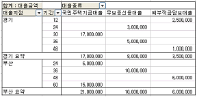
- 피벗 테이블의 행 필드로 '대출종류', '기간'이 설정되어 있다.
- 피벗 테이블의 열 필드로 '대출지점'이 설정되어 있다.
- 피벗 테이블의 데이터 영역에는 '대출금액'이 설정되어 있다.
- 서식옵션으로 열의 총합계와 행의 총 합계를 설정 하였다.
(정답률: 53%)
27. 다음 중 3을 넣으면 화면에 3.000이 입력되는 것처럼 일정한 소수점의 위치를 지정하여 입력을 빠르게 하기 위해 옳은 것은?
- [도구]-[옵션]-[편집]-[데이터 범위의 서식과 수식을 확장]에서 소수점의 위치를 지정한다.
- [도구]-[옵션]-[편집]-[고정 소수점]에서 소수점의 위치를 지정한다.
- [도구]-[옵션]-[편집]-[셀에서 직접 편집]에서 소수점의 위치를 지정한다.
- [도구]-[옵션]-[편집]-[셀 내용 자동 완성]에서 소수점의 위치를 지정한다.
(정답률: 57%)
28. 다음 중 차트에 대한 설명으로 옳지 않은 것은?(본 문제는 오피스 2003 기준 문제 입니다. 엑셀 2003의 경우 <Alt> +<F1>과 <F11>이 모두 새로운 차트 시트에 기본 차트를 만들어 주지만 엑셀 2007의 경우 <Alt> +<F1>은 현재 시트에 기본 차트를 만들어 주며 <F11>의 경우는 새로운 차트 시트에 기본 차트를 만들어 줍니다. 참고 하세요.)
- 워크시트에서 차트에 사용될 데이터의 범위를 지정한 후 <Alt>+<F1>을 누르면 별도의 차트 시트에 기본차트가 작성된다.
- 차트 영역이란 차트 전체를 의미하며 해당 영역에 그림이나 배경 무늬를 삽입할 수 있다.
- 차트에서 행은 데이터 범위 중 필드가 데이터의 계열이 되고, 행은 각 레코드가 데이터의 계열이 된다.
- 차트에서 눈금선의 스타일, 색 두께를 변경하려면 눈금선의 바로 가기 메뉴에서 [눈금선 서식]을 선택하여 설정한다.
(정답률: 33%)
29. 다음 중 수식에서 어떤 값을 '0'으로 나누었을 때 표시되는 오류 메시지로 옳은 것은?
- #NAME?
- #NUM!
- #DIV/0!
- #VALUE!
(정답률: 61%)
30. 다음 중 아래 차트에 대한 설명으로 옳지 않은 것은?
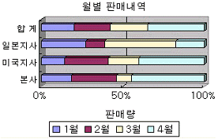
- 범례서식의 배치는 아래쪽으로 설정되어 있다.
- 항목 축 제목은 '판매량'으로 설정되어 있다.
- 차트 종류는 3차원 100% 기준 누적 가로 막대형이다.
- 3차원 회전값을 상하, 좌우로 각각 설정할 수 있다.
(정답률: 54%)
31. 다음 중 =ROUNDUP(324.54,1)+ABS(PRODUCT(1,-2)) 수식의 결과값으로 옳은 것은?
- 325.6
- 326.6
- 324.6
- 325.5
(정답률: 45%)
32. 다음 프로그램의 실행 결과 변수 Test의 값으로 올바른 것은?
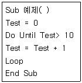
- 10
- 11
- 0
- 55
(정답률: 62%)
33. 다음 중 데이터 표와 데이터 통합에 대한 설명으로 옳지 않은 것은?
- 데이터 표는 특정한 값의 변화에 따른 결과값의 변화를 표 형태로 보여주는 기능이다.
- 데이터 표에서 두 개의 변수에 대한 변화를 계산하려면 행과 열을 사용하는 2차원 표를 이용한다.
- 데이터 통합은 여러 곳에 분산 입력되어 있는 데이터를 일정한 기준에 의해 하나로 합쳐서 계산해 주는 기능이다.
- 데이터 통합 시 원본 데이터에 행이나 열에 병합된 셀이 있어도 올바른 결과가 계산된다.
(정답률: 59%)
34. 다음은 매크로를 Visual Basic Editor로 본 것이다. 이 매크로에 대한 설명으로 옳지 않은 것은?
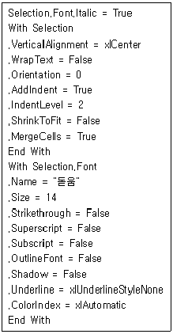
- 여러 개의 셀을 선택하고 매크로를 실행하면 선택된 셀들이 하나로 병합된다.
- 글꼴 스타일은 기울임꼴로 설정된다.
- 매크로 실행후 셀의 가로 텍스트 맞춤은 가운데로 정렬된다.
- 글꼴 크기는 14로 설정된다.
(정답률: 34%)
35. 다음 중 데이터를 정렬할 때 정렬 옵션에서 설정할 수 있는 사항이 아닌 것은?
- 문자/숫자 우선 순위
- 대/소문자 구분 여부
- 정렬 방향
- 사용자 지정 정렬 순서
(정답률: 39%)
36. 다음 중 매크로 기록 대화상자에 대한 설명으로 옳은 것은?
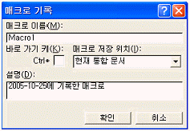
- 매크로 이름은 자동으로 지정되므로 사용자가 지정 할 수 없다.
- 매크로 저장 위치를 현재 통합 문서, 새 통합 문서, 개인용 매크로 통합 문서 중에서 선택할 수 있다.
- <Ctrl>+<3>는 바로 가기 키가 된다.
- 설명은 엑셀에서 기본적으로 설정해 놓았기 때문에 사용자가 임의로 수정할 수 없다.
(정답률: 63%)
37. 다음 중 웹 페이지에 있는 표를 엑셀의 워크시트로 가져오는 방법에 대한 설명으로 옳지 않은 것은?
- 웹 페이지에 있는 표를 복사하여 엑셀 시트에 붙여넣기를 한다.
- 웹 페이지에 있는 표를 선택한 후 드래그하여 시트위에 드롭한다.
- 엑셀의 [데이터]-[외부 데이터 가져오기]-[새 웹 쿼리] 를 사용한다.
- 엑셀의 [편집]-[시트 이동/복사]를 사용한다.
(정답률: 44%)
38. 다음 시트의 [D10] 셀에서 =DCOUNT(A1:D6,3,A8:B10) 을 입력했을 때 결과 값으로 옳은 것은?
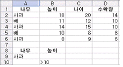
- 3
- 4
- 32
- 40
(정답률: 41%)
39. 다음 중 [인쇄 미리 보기] 기능에 대한 설명으로 옳지 않은 것은?
- [설정]-[페이지]에서 용지의 방향을 설정할 수 있다.
- 인쇄 미리 보기를 실행한 상태에서 마우스 끌기로 여백과 행의 높이를 조절할 수 있다.
- 인쇄될 내용을 확대하여 볼 수 있다.
- [설정]-[시트]에서 눈금선의 인쇄여부를 설정할 수 있다.
(정답률: 55%)
40. 다음 워크시트에서 1학년(B3:F6), 2학년(I3:M6)의 시간표를 이용하여 전체 시간표를 작성하려고 할 때, [B10:F13] 영역의 배열 수식으로 적당한 것은?
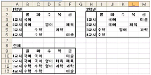
- {=MATCH(B3:F6,I3:M6)}
- {=CONCATENATE(B3:F6,I3:M6)}
- {=REPLACE(B3:F6,I3:M6)}
- {=SUBSTITUTE(B3:F6,I3:M6)}
(정답률: 48%)
3과목: 데이터베이스 일반
41. 다음 중 Access를 이용한 폼 작성에 관한 설명으로 옳지 못한 것은 ?
- 폼 마법사를 이용하여 작성된 폼도 디자인 보기에서 수정이 가능하다.
- 폼은 테이블의 데이터를 보기 편한 형태로 출력하기 위한 용도로 주로 활용된다.
- 폼 마법사를 통하여 사용자가 선택한 필드를 사용하여 폼을 생성할 수 있다.
- 마법사를 사용하지 않고 디자인보기를 이용해서 폼을 만들 수 있다.
(정답률: 30%)
42. 다음 중 액세스에서 테이블로 가져오거나 연결할 수 있는 파일 형식으로 가장 적절하지 않은 것은?
- HTML 문서
- Excel 문서
- 텍스트 파일 문서
- 파워포인트 문서
(정답률: 61%)
43. 액세스 질의문에서 사용되는 산술/대입 연산자 중에서 연산의 몫을 구하는 것으로 올바른 것은?
- ＼
- /
- &
- Mod
(정답률: 33%)
44. 도서 목록을 표시하는 다음 보고서에 대한 설명으로 가장 옳지 않은 것은? 단, 이 보고서는 총5페이지이며 현재 페이지는 4페이지이다.(문제 오류로 2번 3번이 정답처리된 문제입니다. 처음 가답안 발표시 2번으로 발표되었습니다. 여기서는 2번을 정답 처리 합니다.)
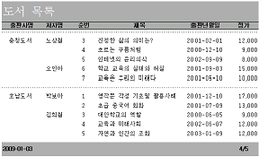
- '출판사명' 필드로 그룹화되어 있으며, 그룹 머리글 영역이 설정되어 있다.
- 도서 목록이라는 제목 등이 표시된 음영 부분은 출판사명 그룹 머리글에 작성하였으며, '반복 실행 구역' 속성을 '예'로 설정하였다.
- '출판사명'과 '저자명'으로도 정렬되었으며, '출판사명'과 '저자명'을 표시하는 컨트롤의 '중복내용 숨기기' 속성은 모두 '예'로 설정하였다.
- 그룹 내에서 일련번호(순번)를 표시하는 텍스트 상자는 컨트롤 원본을 '=1'로 설정하고, '누적 합계' 속성을 '그룹'으로 설정하였다.
(정답률: 68%)
45. 다음의 ( ) 안에 들어갈 용어로 가장 적절한 것은?
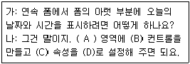
- 본문, 텍스트 상자, 컨트롤원본, =date()
- 폼 바닥글, 레이블, 컨트롤원본, =now()
- 본문, 레이블, 컨트롤원본, =date()
- 폼 바닥글, 텍스트 상자, 컨트롤원본, =now()
(정답률: 47%)
46. 다음은 레코드 삭제와 관련된 설명이다. 잘못 설명한 사람은?
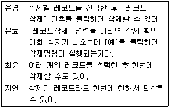
- 은경
- 은효
- 희윤
- 지연
(정답률: 75%)
47. COURSE 테이블의 CNO 필드에는 다음과 같은 값들이 입력되어 있다.
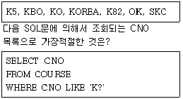
- K5, KBO, KO, KOREA, K82
- K5, KBO, KO, KOREA, K82, OK, SKC
- K5, KO
- K5, KO, K82, OK, SKC
(정답률: 43%)
48. Count 함수를 이용하여 회원수를 구했더니 '3'이라는 숫자만 표시되어 '주소' 필드의 값을 포함하여 '서울 거주 회원수는 3명'과 같이 출력하려고 한다. 다음중 작성 식으로 옳은 것은?
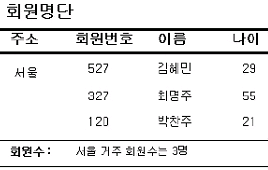
- ="[주소] 거주 회원수는 "& Count([회원번호])& "명"
- ="[주소] 거주 회원수는 "& Count([이름])& "명"
- =[주소]& " 거주 회원수는 "& Count([주소])& "명"
- =[주소]& " 거주 회원수는 Count([*])& "명"
(정답률: 46%)
49. 다음은 보고서의 영역에 대한 설명으로 가장 옳지 않은 것은?
- 보고서의 제목과 같이 보고서의 첫 페이지에만 나오는 내용을 주로 표시하는 구역이 보고서 머리글이다.
- 페이지 번호나 출력 날짜 등을 주로 표시하는 구역이 페이지 바닥글이다.
- 수치를 가진 필드나 계산 필드의 총합계나 평균 등을 주로 표시하는 구역은 본문이다.
- 주로 필드의 제목과 같이 매 페이지의 윗부분에 나타날 내용을 표시하는 구역은 페이지 머리글이다.
(정답률: 52%)
50. DBMS(DataBase Management System)의 설명으로 옳지 않은 것은?
- 데이터의 종속성과 중복성의 문제를 해결하기 위해서 제안된 시스템이다.
- 데이터베이스를 생성, 관리하며, 데이터로부터 사용자의 물음에 대한 대답을 추출하는 프로그램이다.
- 데이터 모델링을 수행하고 데이터베이스를 정의하는 데이터 언어이다.
- 응용 프로그램과 데이터의 중재자로서 모든 응용 프로그램들이 데이터베이스를 공유할 수 있도록 관리하는 소프트웨어 시스템이다.
(정답률: 39%)
51. [성적] 테이블의 '과목코드' 필드와 [과목] 테이블의 '과목코드' 필드를 이용하여 두 테이블간 관계가 설정되어 있다. 이 때 [성적] 테이블의 '과목코드' 필드를 무엇이라 부르며, 두 테이블간에 준수되어야 할 제약을 무엇이라 하는가?(단, [과목] 테이블의 ‘과목코드’ 필드는 기본 키로 설정되어 있음.)
- 외래 키 - 참조 무결성 제약조건
- 외래 키 - 개체 무결성 제약조건
- 기본 키 - 참조 무결성 제약조건
- 기본 키 - 개체 무결성 제약조건
(정답률: 52%)
52. 도서를 관리하기 위한 다음 폼은 [도서] 테이블을 레코드 원본으로 사용한다. [도서] 테이블에는 텍스트 형식의 '저자코드' 필드가 있으며, '저자명' 필드는 [저자] 테이블에 존재한다. '저자코드'를 표시하는 'txt저자코드' 컨트롤을 이용하여 'txt저자명' 컨트롤에 '저자명'을 표시하도록 하기 위한 컨트롤 원본으로 가장 적절한 것은?
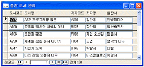
- =DLookUp(저자명,저자,"저자코드 = '"& [txt저자코드]& "'")
- =DLookUp("저자명","저자","저자코드 = '"& [txt저자코드]& "'")
- =DLookUp("저자","저자명","저자코드 = '"& [txt저자코드]& "'")
- =DLookUp(저자,저자명,"저자코드 = '"& [txt저자코드]& "'")
(정답률: 43%)
53. 다음의 반복 제어문의 결과로 Sum 변수에는 어떠한 값이 저장되는가?
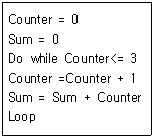
- 3
- 6
- 9
- 10
(정답률: 28%)
54. 성적 테이블(윗쪽 그림)에 대해 아래쪽 그림과 같은 실행 결과를 얻기 위한 SQL 질의문으로 옳은 것은?
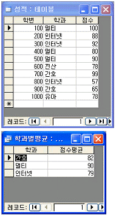
- SELECT 학과, Avg(점수) AS 점수평균 FROM 성적 GROUP BY 학과 WHERE Count(*)>=2
- SELECT 학과, Avg(점수) AS 점수평균 FROM 성적 GROUP BY 학과 HAVING Count(*)>=2
- SELECT 학과, Avg(점수) AS 점수평균 FROM 성적 GROUP BY 점수 WHERE Count(*)>=2
- SELECT 학과, Avg(점수) AS 점수평균 FROM 성적 GROUP BY 점수 HAVING Count(*)>=2
(정답률: 56%)
55. 다음 중 보고서의 작성시에 사용하는 속성에 관한 설명으로 가장 옳지 않은 것은?
- 반복실행구역 : 해당 구역이 페이지 머리글처럼 매 페이지에도 나타나도록 설정하는 속성으로 그룹 머리글에서만 사용할 수 있다.
- 레코드 원본 : 다양한 데이터로 조회하는 SQL문을 속성 값으로 지정하여 그 결과를 보고서에 표시할 수 있다.
- 편집가능 : 보고서나 컨트롤의 속성으로 보고서의 데이터를 수정할 수 있도록 하기 위해서는 이 속성 값을 '예'로 지정한다.
- 중복 내용 숨기기 : 텍스트 상자와 같은 컨트롤의 속성으로 이전 레코드와 동일한 값을 갖는 경우에는 컨트롤을 표시하지 않도록 설정한다.
(정답률: 23%)
56. 다음 중 탭 순서에서 제외되는 컨트롤은 무엇인가?
- 텍스트 상자
- 콤보 상자
- 레이블
- 명령 단추
(정답률: 45%)
57. 다음 중 폼에 대한 설명으로 가장 옳지 않은 것은?
- 폼에 데이터가 연결되어 있는지의 여부에 따라 바운드 폼과 언바운드 폼이 구분된다.
- 바운드 폼은 일반적으로 테이블의 내용을 표시하며 이를 수정할 수 있다.
- 폼의 '컨트롤 원본' 속성에서 테이블명이나 쿼리 등을 지정하여 폼을 바운드할 수 있다.
- 폼을 사용하여 데이터베이스의 보안성과 사용자의 편의성을 높일 수 있다.
(정답률: 33%)
58. 다음 중 액세스에서 색인(index)에 대한 설명으로 가장 옳지 않는 것은?
- 인덱스 이름을 공통적으로 부여하면 여러 개의 필드를 하나의 인덱스로 구성할 수 있다.
- 'OLE 개체'를 제외한 모든 데이터 형식 필드에 인덱스를 설정할 수 있다.
- 인덱스를 설정하면 조회 및 정렬 속도는 느려지지만 업데이트 속도는 빨라진다.
- 중복불가능(unique) 색인을 설정하면 중복된 자료의 입력을 방지할 수 있다.
(정답률: 61%)
59. 다음의 관계를 참고하여 부서이름이 '영업부'인 사원들의 성명과 근무년수를 검색하는 SQL 구문으로 가장 적절한 것은?
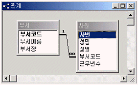
- SELECT 성명, 근무년수 FROM 사원 left join 부서 WHERE 사원.부서코드 = 부서.부서코드 and 부서이름 ='영업부');
- SELECT 성명, 근무년수 FROM 사원 WHERE 부서코드 IN (SELECT 부서코드 FROM 부서 WHERE 부서이름 ='영업부');
- SELECT A.성명, B.근무년수 FROM 사원 AS A, 부서 AS B WHERE B.부서이름 = '영업부';
- SELECT 성명, 근무년수 FROM 사원, 부서 WHERE 부서코드 in (SELECT 부서코드 FROM 부서 WHERE 부서이름 = '영업부');
(정답률: 54%)
60. 테이블의 필드 생성시 기본키(주키) 설정은 매우 중요하고 테이블을 이용할 때 처리 효율에 영향을 미치는 관계로 신중하게 설정해야 한다. 기본키에 관한 설명 중 옳지 않은 것은 ?
- 기본키를 구성하는 필드는 한 개만 된다.
- 기본키에 해당하는 필드의 값은 유일해야만 한다.
- 기본키에 해당하는 필드의 값으로 널값은 허용되지 않는다.
- 기본키는 한 테이블에 하나만 허용된다.
(정답률: 40%)